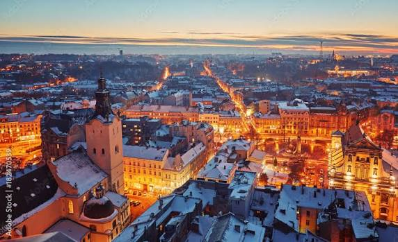

Львів

Коротка характеристика
Львів — історичне місто на заході України, відоме старовинною архітектурою, затишними площами, кав'ярнями та особливою культурною атмосферою.
Пояснення особистого вибору
Я обрав Львів через його неповторний характер: тут можна побачити сліди різних європейських культур і водночас відчути українські традиції.
Цікаві факти
- Історичний центр Львова внесено до списку Світової спадщини ЮНЕСКО.
- Місто заснував король Данило, назвавши його на честь свого сина Лева.
- Львів часто називають культурною столицею України.
Визначні місця
Площа Ринок, Львівська ратуша, Оперний театр, Високий замок, Домініканський собор і Личаківський цвинтар.
Особиста оцінка
Львів — дуже атмосферне місто для прогулянок, фотографій і знайомства з історією України.